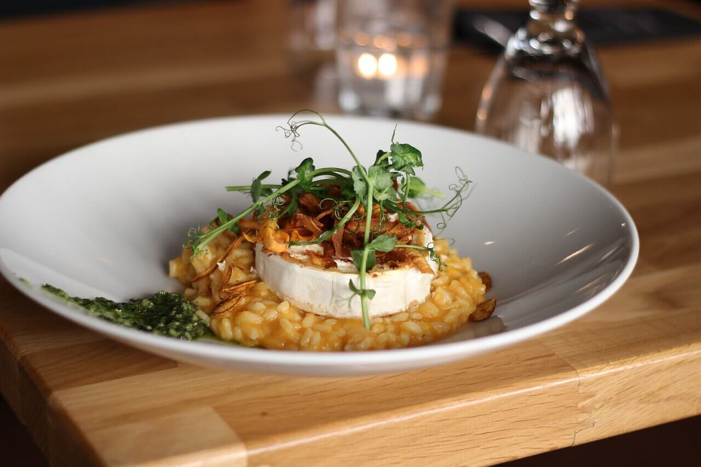

Risoto

- 1 sl soolamata võid
- 1 suur tükeldatud sibul
- 2 tassitäit riisi
- pool tassitäit valget kuiva veini
- 1 tassitäis korralikult riivitud Parmesani juustu
Valmistamine
- Soojenda puljong üles. Vala puljong pannile ja kuumuta keskmisel kuumusel.
Puljongi soojendamine enne riisile lisamist aitab riisist rohkem tärklist välja saada ning takistab üleküpsetamist.
- Sulata või. Võta välja teine pann ning sulata või keskmisel kuumusel.
Lisa juurde tükeldatud sibul, natukene soola ja küpseta kuni segu muutub aromaatseks ja sibul hakkab pehmenema. See samm võtab aega umbes 4 minutit.
- Lisa juurde riis. Sega kogu riis võiseguga kokku. Lisa vajadusel võid juurde - ära hoia kokku!
Jätka segamist umbes 2 minutit. Selle aja jooksul peaksid tundma hakkama tugevat riisiaroomi. Sinu ülesandeks ei ole riisi pruunistamine, vaid aroomi kätte saamine.
- Vala juurde veini. Veini lisamine ei ole kahtlemata kohustuslik samm, aga vein lisab roale aroomi ja aitab paremini välja tuua maitseid.
Jätka segamist kuni vein on täielikult riisi imbunud ning pann on peaaegu kuiv.
- Seejärel hakka vaikselt lisama puljongit. Hakka poole tassitäie kaupa riisile juurde lisama puljongit. Oota kuni puljong on peaaegu täielikult riisi imendunud enne, kui uue koguse juurde lisad.
Selline samm sammu haaval vedeliku lisamine on võti imelise risotoni. Jätka puljongi lisamist kuni riis on al dente ja puljong on parajalt kreemine.
Proovi riisi ja kontrolli, kas see on valmis. Riis peaks olema õrnalt nätske ning saadud segu meenutama paksu putru. Sa ei pea ära kasutama kogu puljongit.
- Risoto serveerimine. Viimase sammuna lisa risotole veel 1-2 supilusikatäit võid ja tassitäis riivitud juustu, et see oleks veelgi kreemisem ja rikkalikuma maitsega.
Serveeri kohe! Mida kauem risoto seisab, seda vähem siidjamaks ja mõnusamaks see muutub.